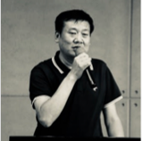

演讲嘉宾

谷中华
东南大学 机械工程学院院长
嘉宾介绍
谷中华，中国科学院院士，东南大学精密仪器与机械学系长江学者特聘教授。1982年毕业于东北大学，1985年至1988年在西安建筑科技大学读研究生，并获西安建筑科技大学硕士学位，1994年获清华大学博士学位。现任东南大学摩擦学国家重点实验室主任。2011年当选为中国科学院院士
机械工程人才国际化培养与合作
行业对各类国际化人才的需求呈现急速增长的趋势,如何培养具有国际视野高素质的有中国特色的国际化专业人才已成为高等教育研究的热点问题。结合东南大学车辆工程专业在多途径培养有特色的国际化人才方面的具体做法,对地方高校培养高层次国际化工程应用型人才的模式和途径进行了探讨。